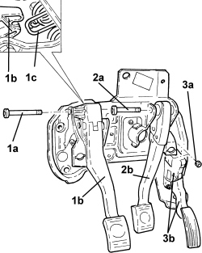
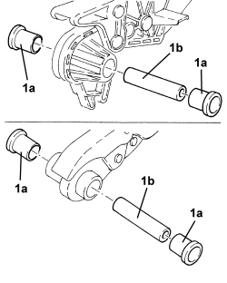
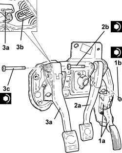

3330B16 PEDAL UNIT ASSEMBLY - DISMANTLING AND REASSEMBLY AT THE BENCH
- Path
- Procedures > 33 BRAKES > 3330 HYDRAULIC BRAKING SYSTEM > 3330B PEDAL UNIT > 3330B16 PEDAL UNIT ASSEMBLY - DISMANTLING AND REASSEMBLY AT THE BENCH
- Kind
- repair procedure (removal / refitting; the operation number is the code)
- Applies to
- all engines; all production periods
- Interactive page
- https://sloeber94.github.io/elrnDB-aBrrSpdr/en/#/946002128
Applies to: all engines; all production periods
 Removing
Removing
 Refitting
Refitting1. Unscrew bolt (1a) and remove clutch pedal (1b) after releasing from return spring (1c).
2. Undo the bolt (2a) and remove brake pedal (2b).
3. Undo the nuts (3a) and remove the accelerator pedal with built in potentiometer (3b).

Applies to: all engines; all production periods
1. Remove bushes (1a) and pin (1b) from the clutch pedal and brake pedal.

Applies to: all engines; all production periods
Refitting
Removing- Refit the pin and bushes in their seats on the clutch pedal and brake pedal.
1. Place the accelerator pedal with built-in potentiometer (1a) in its housing and secure it by tightening the nuts (1b) to the recommended torque.
2. Place the brake pedal (2a) in its housing and secure it by tightening the bolt (2b) to the recommended torque.
Component | Fastening | dia | Value (daNm) | Validity |
|---|---|---|---|---|
Brake pedal | Bolt | M | (pedal assembly side) |
3. Place the brake pedal (3a) in its housing, connnect it to return spring (3b) and secure it by tightening the bolt (3c) to the recommended torque.
Component | Fastening | dia | Value (daNm) | Validity |
|---|---|---|---|---|
Clutch pedal | Bolt | M | (pedal assembly side) |
